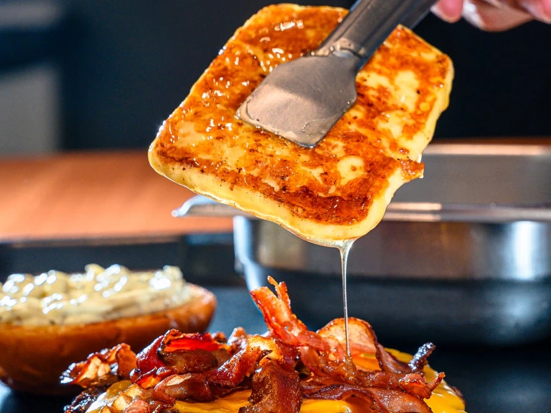

Smash burger em Vila Matilde
A Ship's Burguer prepara smash burger com sabor de chapa quente, queijo derretido e lanches artesanais para quem quer comer bem na Vila Matilde.
Você pode pedir online pelo Cardápio Web, chamar no WhatsApp ou visitar o salão da Ship's Burguer na Rua José Mascarenhas.
Quero pedir agora